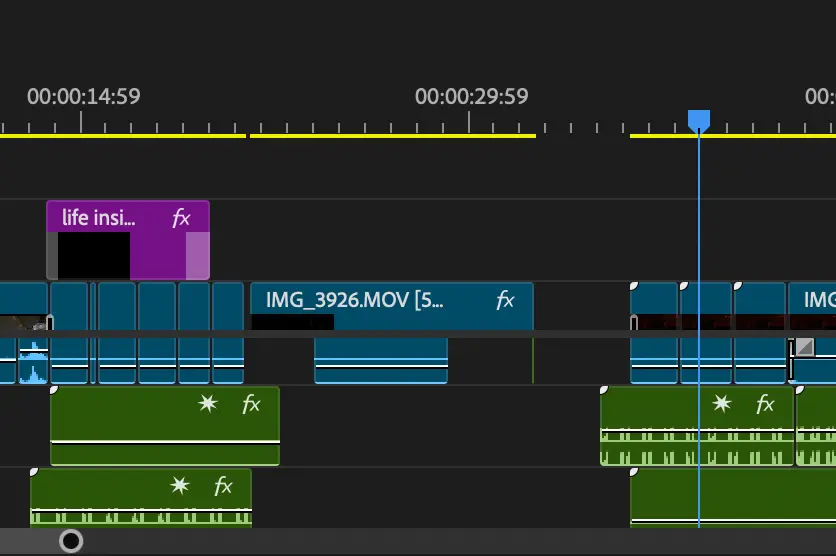
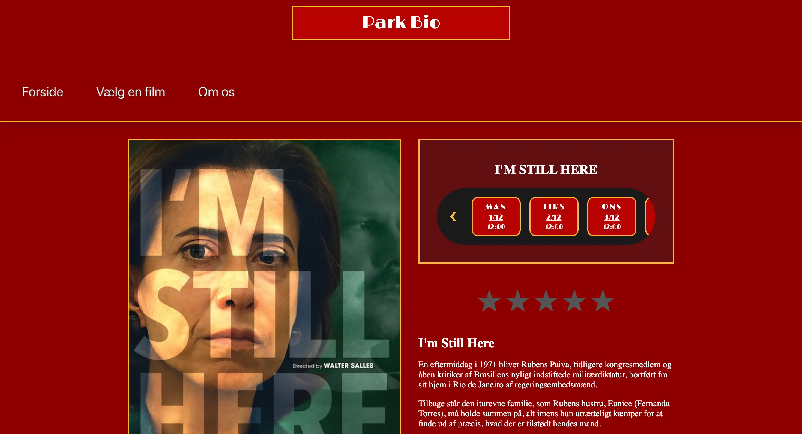
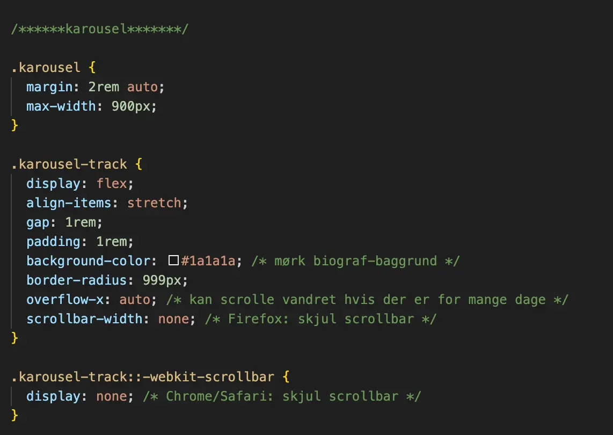

Tema 5 - Grundlæggende indhold
Grundlæggende indhold - formål
I dette tema blev jeg introduceret til Adobe Premiere Pro og fik en grundlæggende forståelse for digital indholds-produktion, herunder præproduktion, produktion og postproduktion. Jeg blev introduceret til centrale faglige begreber inden for indholdsproduktion, såsom synkronisering og rensning af lyd.
Temaet havde fokus på, hvordan man planlægger, producerer og optimerer indhold til digitale bruger-grænseflader med udgangspunkt i en konkret målgruppe.
Derudover byggede temaet videre på de kompetencer, jeg havde opnået i de tidligere temaer, ved at anvende dem i et redesign af en virksomheds hjemmeside. Her var der fokus på samspillet mellem indhold, brugeroplevelse og bruger-grænseflade samt på dokumentation, test og præsentation af den samlede løsning.

En lille historie i billeder og lyd
I dette tema fik jeg for alvor prøvet kræfter med videoredigering – et område jeg længe har haft interesse for, men ikke tidligere har arbejdet seriøst med. Jeg blev introduceret til Adobe Premiere Pro og fik til opgave at producere videomateriale med udgangspunkt i et objekt.
Opgaven blev løst i grupper, og min makker og jeg startede med en idéudviklingsfase, hvor vi blandt andet anvendte crazy eight-metoden til at generere idéer. Vi blev hurtigt enige om, at videoens stemning skulle kredse om følelser som frygt, spænding og ensomhed.
Ud fra dette opstod idéen om at lave en video, der følger en flaske inde i et køleskab – filmet fra flaskens eget perspektiv. Det viste sig at være en udfordrende optageproces, da vi skulle arbejde med meget specifikke vinkler for senere at kunne skabe den ønskede stemning i redigeringen. Jeg stod primært for videoredigeringen, mens min gruppemakker havde ansvaret for at finde og arbejde med lydfiler, som understøttede fortællingen.
Virksomhedssite
Resten af temaet handlede om redesign af en selvvalgt virksomheds hjemmeside. Opgaven blev løst som gruppearbejde, og vi blev samtidig introduceret til GitHub som samarbejdsværktøj. For at strukturere arbejdet brugte vi Trello til opgavefordeling og planlægning af vores arbejdsproces over de kommende uger.
Vi valgte at tage udgangspunkt i Park Bio – en selvkørende biograf på Østerbro med over 100 års historie. I designprocessen udarbejdede vi wireframes, moodboards og styletiles og hentede inspiration fra andre biografkæders hjemmesider. Efterfølgende udviklede vi prototyper og diskuterede forskellige designretninger, før vi besluttede os for et retro-inspireret design, der skulle afspejle biografens identitet og historie.
I kodningsfasen spillede en filmkarrusel en central rolle, da brugeren her skulle kunne se og vælge mellem de aktuelle film i biografen. Jeg oplevede især udfordringer med opsætning af grids – særligt på “vælg en film”-siden, hvor det var vanskeligt at få elementerne placeret korrekt og struktureret under hinanden. Denne proces gjorde mig dog markant klogere på layout og struktur i frontend-udvikling.

